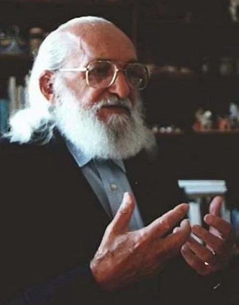

Educação Proposta
Preocupado com o grande número de adultos analfabetos na área rural dos estados nordestinos - que formavam consequentemente um grande número de excluídos - Paulo Freire desenvolveu um método de alfabetização.
Sua proposta de ensino estava baseada no vocabulário do cotidiano e da realidade dos alunos: as palavras eram discutidas e colocadas no contexto social do indivíduo. Por exemplo: o agricultor aprendia as palavras, cana, enxada, terra, colheita etc.
Obras
O filósofo e pedagogo Paulo Freire é o educador brasileiro mais prestigiado e conhecido mundo afora por inovar o ensino com a proposta de aplicação de um método de alfabetização cujo objetivo principal é o de estimular (as)os alun(as)os a refletirem sobre a realidade vivida. A revista Educação e Pesquisa traz o artigo “Paulo Freire e o valor da igualdade em educação”, pondo em pauta o debate sobre sua frase “ninguém é superior a ninguém”, buscando explicar essa afirmação com um enfoque filosófico da palavra “igualdade“, exposta pelo educador como “condição de uma educação libertadora para a qual aceitar e respeitar a diferença”.
O artigo enfatiza “a importância de educadores e educadoras se colocarem em pé de igualdade e saberem escutar educandos e educandas” com respeito, tolerância, disponibilidade à mudança, e, sobretudo, humildade, “como virtude pedagógica“, segundo Paulo Freire, cujo conceito de igualdade está implícito em sua afirmação “ninguém é superior a ninguém”, uma exigência para uma educação emancipadora. Paulo Freire entendia a igualdade como princípio, como natureza, como realidade e como existência, lançando alguns livros como exemplo e entender de sua visão sobra a educação brasileira